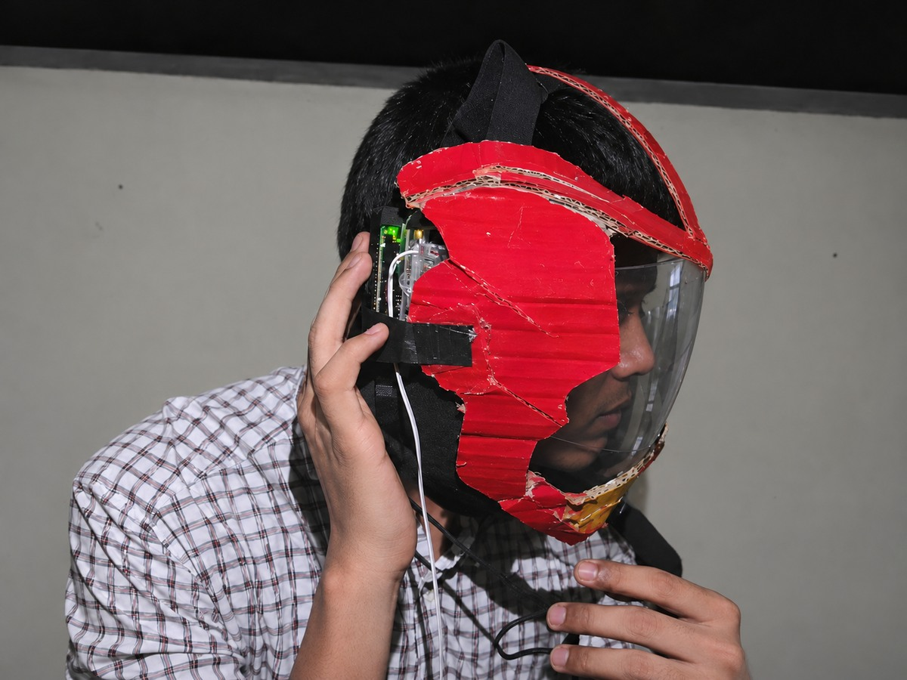
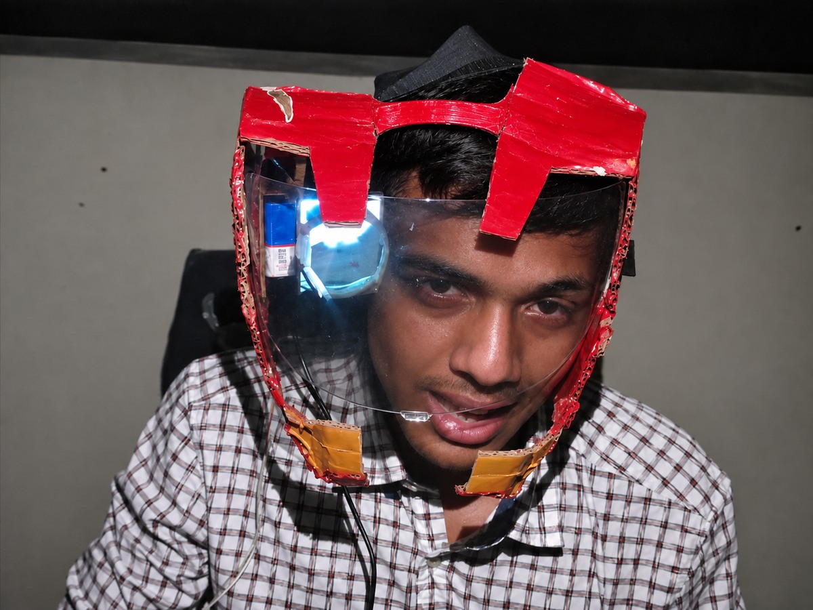
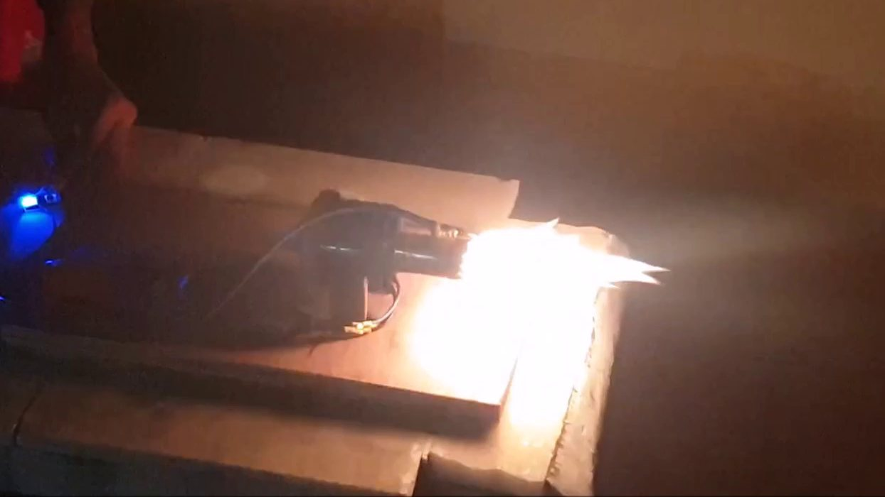

The idea
We built a ducted-fan prototype. For the helmet, I put a small display at my temple and used a clear angled screen to bring the image into view.
1The helmet display
I wanted to glance at the jet's control indicators while keeping the bench in view. I used an Arduino to drive a small display and put the projector beside my eye. That kept the electronics out of the centre of my view. The clear visor put the projected image in front of one eye while I could still see through it.




2The jet
My friend and I built a small ducted-fan jet with an afterburner for the school exhibition. The electric fan supplied the airflow. We tested the assembly on a bench, where we could see what the flame did as we tried different ideas.


One early ignition test exploded and damaged its container. The later footage shows a sustained flame during the bench run.
3What I learned
Our school report planned to refuel the jet in flight by splitting water on board. That cannot work: splitting water takes more energy than burning the hydrogen gives back. The project taught me to check what the physics allows before writing the rest of the plan.